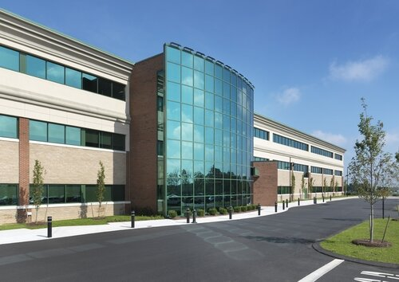

My Education Background
Education and School was never my top interest. Still is not to this day, but day by day I am adapting and learning to accept my fate. Education is important I believe but not the root or end all for success. Originally I wanted to start a small business. I disliked school, especially High School, but here I am even after completely Community College of Rhode Island. I decided to come back for more education, I do not know if that's a good thing or a bad thing. But we'll have to wait and find out, I hope I made the right decision. So far my experience at New England Institute Of Technology has been positive. I am not a very talkative person, I prefer staying quiet 90% of my day but I did make a few friends. So that's cool I guess? I can not wait to finish and get my degree I am excited to join the work force and get my first "real job." With good income I probably will decide to buy a nice car, I make more financial decisons. Like buying a motorcycle outright, instead of using that money to pay for a whole term of tuition.
